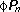
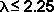
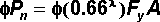
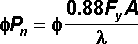
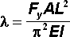

The compressive strength of a member is the internal force at which a member becomes in . If the actual exceeds the compressive strength, then the member might fail.
The compressive strength calculations performed by the Bridge Designer 2016 are based on the failure mode.
Compressive strength is represented by the symbol  and is measured in units of force, such as kilonewtons (kN). Compressive strength can be calculated using the following equations:
If  then

If then

where
 is a dimensionless parameter that differentiates between the inelastic (l<2.25) and elastic (l>2.25) buckling failure modes.
and
f = 0.90 is the for a member in compression
Fy is the
A is the of the member
p is 3.14159...
E is the of the material
I is the of the member
L is the length of the member
These equations are taken from the 1994 LRFD Bridge Design Specifications.
To see a graph of compressive strength, as a function of member length, click the
To obtain the numerical values of Fy and E for a given material and A and I for a given and , click the
The Bridge Designer 2016 calculates the compressive strength of each member in your during the load test.
The compressive strength of a member is always less than its tensile strength. If the member is relatively long and slender, the difference can be quite substantial.
The number 0.88 in the equation above accounts for the fact that actual structural are never perfectly straight. Because of their slight crookedness, actual structural members buckle at an internal force that is (on average) about 12% lower than theory predicts.